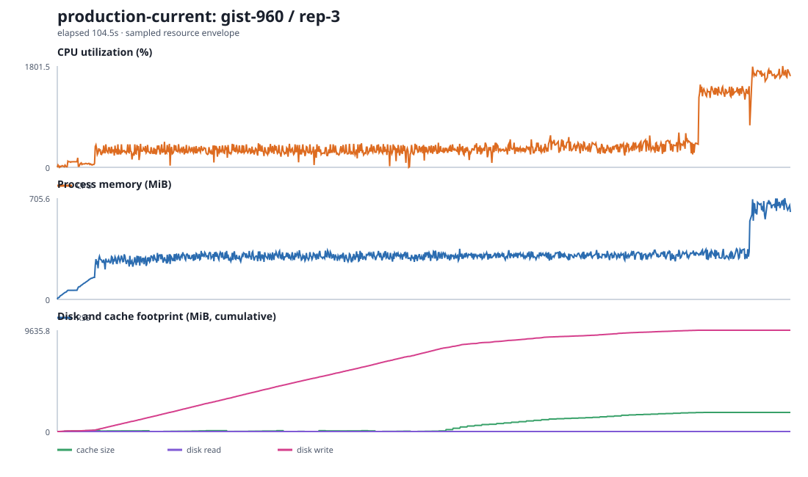

In-memory ANN service
- Whole index pinned in cluster RAM
- Capacity sized to the dataset, not the traffic
- A separate tier to run, patch, and page
- Re-index and re-shard to grow
Nearest-neighbour search on object storage
Blob-Oriented Retrieval with Segmental Unified KNN
BORSUK keeps the entire index as immutable objects — standard Parquet tables plus a compact per-segment binary vector sidecar — in the S3, MinIO, SeaweedFS, GCS, or Azure storage you control. Search executes inside your application process with bounded CPU/RAM and no separate BORSUK database cluster.
Migration adapters preserve common Pinecone, Qdrant, turbopuffer, Chroma, and Amazon S3 Vectors call shapes. They are compatibility aids, not promises of identical control-plane or consistency behavior. See the adapters →
2026-07-21 · fixed-width cell-aligned exact-page rebuilds are running · earlier v8 latency rows are retained as historical evidence, not carried across the format change
Vectors grouped into global semantic cells, independent of bounded physical segments. A query pages only the selected PQ cells and exact-reranks lossless rows.
Runs on the storage you have
One Rust engine · native bindings
Why BORSUK
The usual path stands up a dedicated search service. BORSUK embeds search in the client process and moves durable index state to local or object storage. That removes a separate database tier; it does not remove the client CPU, RAM, disk cache, or operational work.
Memory
V8 assigns vectors to global coarse-PQ cells independently of ingest checkpoints, consumes code objects in fixed 32-chunk waves, and coalesces shortlisted vectors into bounded standard Arrow IPC record-batch reads. The default admits four searches, caps build workers at four, overlaps S3 waits with one bounded 24-thread small-stack I/O pool, and materializes record IDs only for final top-k rows. Fresh v8 AWS rows are published only after source rebuilds and repeats.
How memory stays low →
Answers
Exact mode returns the true nearest neighbours; every approximate result is re-ranked on full vectors. The production leaf mode is pq-scan — paged, graph-free, and bounded on memory. The graph-backed modes vamana-pq and hybrid are experimental.
Writes
Inserts append immutable segments. Deletes tombstone and reclaim lazily. Oversized bubbles split, sparse ones merge, and compaction is sharded per segment so many nodes maintain the index in parallel.
Observability
Bytes read, segments searched, routing pages, cache hits, and object-store requests come back on the report — so tuning is a measurement, not a guess.
How it works
A persisted adaptive IVF descriptor selects flat, product, or hierarchical semantic cells independently of ingest segments.
Selected rotated product-PQ slices are range-read from packed immutable bundles in 32 MiB/query waves; adjacent slices share a GET.
Only the bounded shortlist fetches fixed-width lossless vectors; IDs and generations are materialized later for the final top-k.
Where BORSUK fits
Most vector search either pins the index in RAM, memory-maps it from local SSD, or hides it behind a managed service. BORSUK keeps it in object storage and stays a source-available library you run in your own process. The table compares design and deployment models — it is not a head-to-head latency benchmark, since these systems don't run on the same hardware.
| System | Kind | Index lives in | Resident RAM | Updates | Open / self-run |
|---|---|---|---|---|---|
| BORSUK | Library | Object storage (S3, GCS, Azure…) | 193–759 MiB peak on selected AWS profiles | Insert · delete · split · merge | Source-available BUSL 1.1, in-process |
| SPFresh paper · SOSP '23 | Research system | Local NVMe SSD | Working set | In-place incremental (LIRE) | Open prototype |
| DiskANN / Vamana paper | Research + library | Local SSD + RAM | Graph kept resident | Streaming (FreshDiskANN) | Open, self-host |
| Annoy OSS | Library | Memory-mapped local files | Mapped file pages | Immutable after build | Open, in-process |
| FAISS / hnswlib OSS | Library | RAM (mostly) | Whole index resident | Incremental add (hnswlib) | Open, in-process |
| turbopuffer commercial | Managed service | Object storage + hot cache | Managed for you | Yes | Closed SaaS |
| Amazon S3 Vectors commercial | Managed (AWS) | S3-native | Managed for you | Yes | Closed, AWS-only |
| Pinecone commercial | Managed service | Service (RAM / SSD) | Managed for you | Yes | Closed SaaS |
The honest trade-off. An in-memory library answers a query without touching a network, and a managed service hides operations entirely — those are real advantages. BORSUK's bet is the opposite corner: keep the index in the bucket you already have, bound query working memory, stay source-available, and run in your own process with no separate tier to operate. It borrows the incremental-rebalancing idea from SPFresh's LIRE and graph leaves from the Vamana line of work, and lands them on immutable object storage. Reach for an in-memory engine when per-query latency is everything; reach for BORSUK when footprint, cost, and owning your own data path are.
What it costs
Source-available, with a revenue-limited grant. BUSL 1.1 permits production use without a separate software fee only when the legal entity and affiliates had no more than US $100,000 gross annual revenue in the most recent fiscal year. Larger production users need a commercial license.
Every option needs application/client compute. BORSUK runs search in that process; a managed product runs search behind its API. The fair comparison excludes common client compute from every headline row and reports BORSUK CPU/RAM separately. Storage and GET costs below come from the exact selected Frankfurt index footprints and measured reads.
BORSUK — six measured indexes
≈ $0.96/mo storage
Common application/client compute is omitted for every option. BORSUK may also use bounded local cache disk; it has no separate query API fee.
Amazon S3 Vectors
$2.50/M API calls + usage
AWS's updated 10M-vector/1M-query example totals $11.38/month.
turbopuffer
$16/mo minimum
Vendor list-price context, not an identical-data benchmark.
Snapshot 2026-07-20. BORSUK uses the Frankfurt S3 Standard price-list values $0.0245/GB-month and $0.43/million GETs. Billing units across vendors are not equivalent and are not collapsed into a fake winner. See the formulas, all six rows, license boundary, Pinecone and Chroma context.
Quickstart
BORSUK is written in Rust and exposed directly through PyO3 and N-API, so the Python and TypeScript packages never shell out to a CLI — behaviour and performance match across all three.
use borsuk::{BorsukIndex, IndexConfig, LeafMode, SearchOptions, VectorMetric, VectorRecord};
let mut index = BorsukIndex::create(IndexConfig {
uri: "s3://my-bucket/index".into(),
metric: VectorMetric::Cosine,
dimensions: 768,
segment_max_vectors: 4096,
ram_budget_bytes: Some(borsuk::DEFAULT_RAM_BUDGET_BYTES),
text: false,
named_vectors: Default::default(),
})?;
index.add(vec![VectorRecord::new("doc-1", embedding)])?;
let hits = index.search_ids(&query, SearchOptions::approx(10, LeafMode::PqScan))?;import borsuk
index = borsuk.create(uri="s3://my-bucket/index", metric="cosine", dim=768)
index.add([embedding], ids=["doc-1"])
hits = index.search_ids(query, k=10, mode="approx", leaf_mode="pq-scan")import { create } from "borsuk";
const index = await create({ uri: "s3://my-bucket/index", metric: "cosine", dimensions: 768 });
await index.add([embedding], { ids: ["doc-1"] });
const hits = await index.searchIds(query, { k: 10, mode: "approx", leafMode: "pq-scan" });
Or run the bundled example end to end:
cargo run --locked -p borsuk --example local_index
A bundled SeaweedFS stack runs the Rust, Python, and TypeScript S3-compatible tests locally, so you can watch the network read/write path before wiring up a cloud bucket.
Evidence, not adjectives
The research page renders these live from the CSV data committed to the repository — standard public datasets, interactive mode comparison charts, configuration ablations, resource timelines, dataset-size scale charts, release scale gates, and external comparisons. Measured results are labelled measured; local attempts carry their stop limits.
Six earlier public-corpus campaigns remain archived as regression evidence. Current typed-Arrow results are being recreated from empty prefixes against the expanded DBpedia, Cohere, LAION, MS MARCO, filter, tenant, hybrid, and late-interaction matrix.
Start with a local index in a few lines, then change one URI to go to S3.